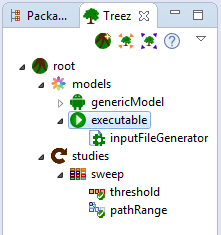

Treez View
Purpose
The is the heart of Treez. It displays a tree model of the application and
provides actions to edit the tree model. Each node of the tree represents a corresponding Treez atom.

Tool bar actions of the Treez View
- : Creates a atom and sets it as the content of the .
The previous content of the will be overwritten.
- : Imports a tree from the currently opened Java file.
The previous content of the will be overwritten.
 : Exports the tree to the currently opened Java file.
The previous content of the Java file is overwritten.
: Exports the tree to the currently opened Java file.
The previous content of the Java file is overwritten.- : Shows the Treez help.
Tree node mouse actions
- Left-click: Shows the properties of the corresponding Treez atom in the .
- Right-click: Shows a context menu which provides further actions
that are specific to the tree node/atom.
- Double-click: Fully expands or collapses the tree node.